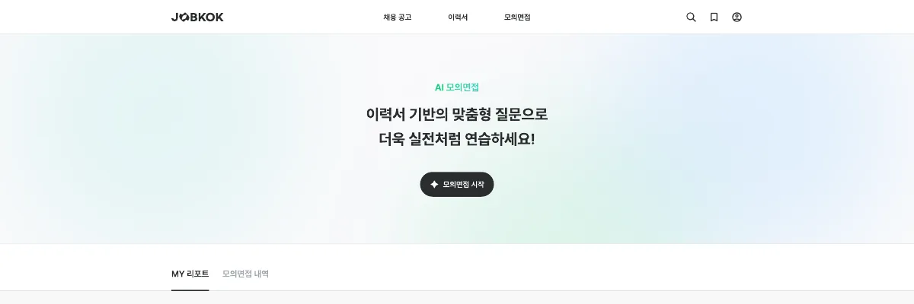
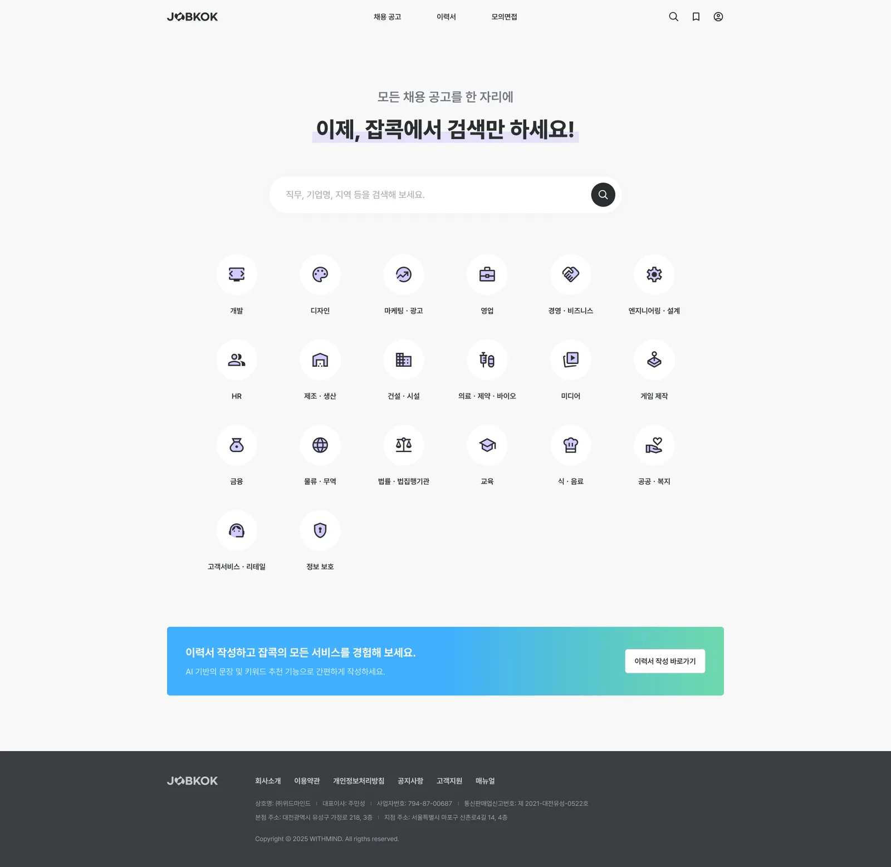
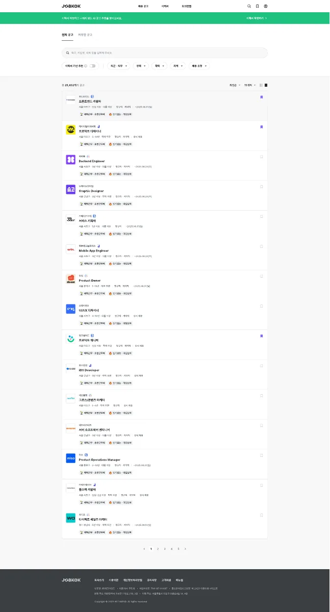

잡콕
영상·음성 기반 AI 면접 분석을 붙인 구인구직 플랫폼입니다. 구직자 화면과 기업 화면을 함께 맡았습니다.

프로젝트 소개
구직자는 이력서를 쓰고 모의면접을 본 뒤 맞는 공고를 추천받고, 기업은 그 결과를 보고 지원자를 고릅니다. 같은 이력서와 면접 리포트를 두 화면에서 다르게 배치하는 일이 핵심 작업이었습니다.


이력서 작성과 공개 범위
학력과 경력을 넣으면 희망 직무와 스킬 키워드를 추천하고, 이력서 제목과 자기소개서 작성까지 이어집니다. 입력 항목이 많아 단계를 나눠 보여줍니다.
이력서, 면접 영상, 분석 리포트는 항목별로 공개 여부를 정합니다. 면접 영상에는 얼굴과 목소리가 담기므로, 토글 하나 대신 누구에게 어디까지 보이는지를 화면에 함께 표시했습니다.
AI 모의면접과 리포트
모의면접은 표정, 음성, 답변 내용을 분석해 리포트를 만듭니다. 응시 진입부터 진행 상태, 결과 확인까지의 화면을 맡았습니다.
분석이 끝나기까지 시간이 걸려서, 목록에서 완료 여부를 바로 보이게 하고 진행 중인 건은 상태를 문장으로 표시했습니다.
결과 리포트는 점수만 크게 보여주지 않고 표정·음성·내용을 나눠, 다음에 무엇을 고쳐야 할지 보이게 했습니다.

공고 추천과 검색
이력서와 면접 분석 결과를 바탕으로 공고를 추천하고, 외부 채용 사이트 공고도 함께 모아 보여줍니다. 카드에서 공고의 출처와 추천 여부를 구분할 수 있게 했습니다.
검색 조건이 늘수록 무엇이 걸려 있는지 놓치기 쉬워서, 적용된 필터를 항상 목록 위에 남겨 뒀습니다.
기업 화면
기업은 다른 채용 사이트의 공고 URL만 올려도 공고를 등록할 수 있습니다. AI가 보완할 점을 제안하고 허위·차별 표현을 표시하며, 고칠 곳을 공고 본문 안에서 바로 짚어 줍니다.
지원자 목록에서는 이력서, 면접 영상, AI 리포트를 함께 봅니다. 구직자 화면과 같은 데이터지만 정렬과 강조 항목이 달라 컴포넌트를 따로 만들었습니다.
사용 기술
Java Spring MVC 구조에서 화면과 컨트롤러를 함께 다뤘고, 구직자·기업 화면을 데스크톱과 모바일에서 함께 쓸 수 있게 만들었습니다. AI 모델은 과제 팀이 맡았고, 저는 분석 결과를 받아 화면에 붙였습니다.
돌아보며
구직자와 기업이 같은 데이터를 다른 목적으로 보는 서비스입니다. 구직자에게는 더 채워야 할 것이, 기업에게는 이 지원자를 봐야 할 이유가 보여야 했습니다.